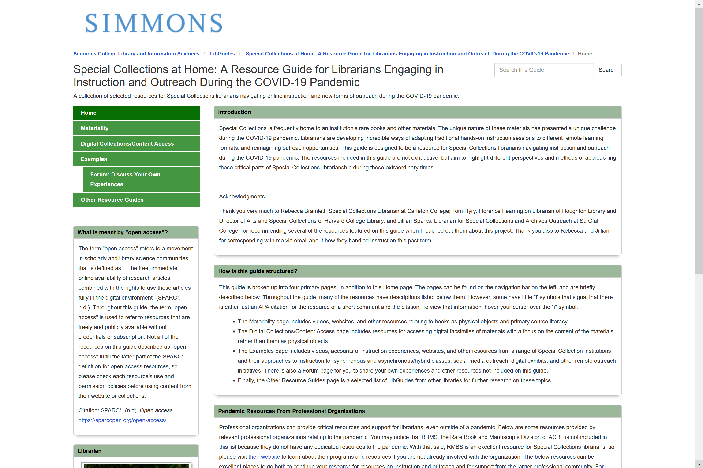
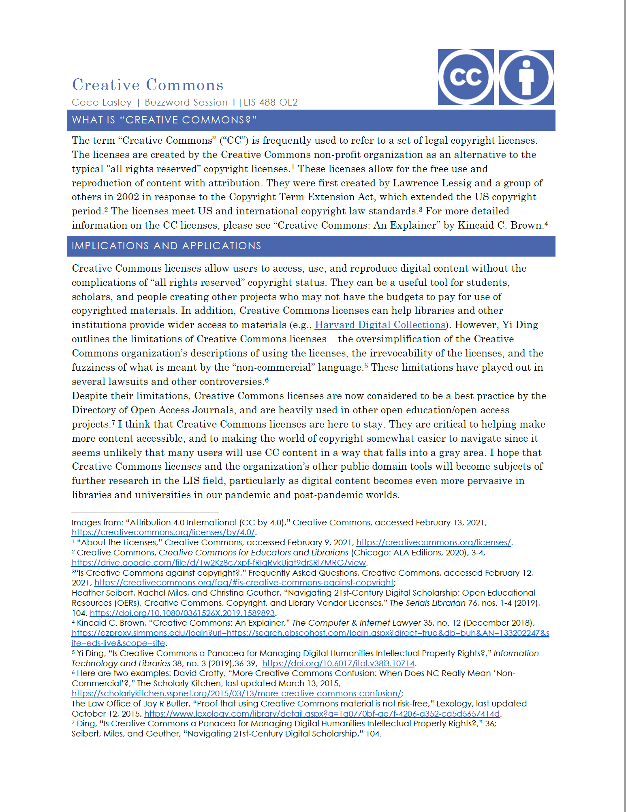
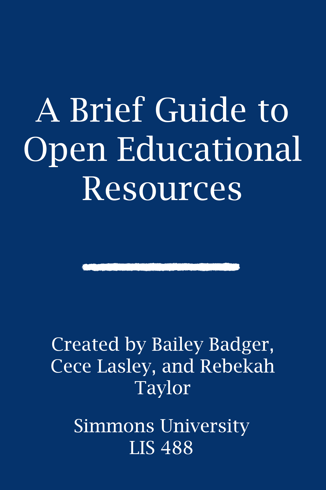
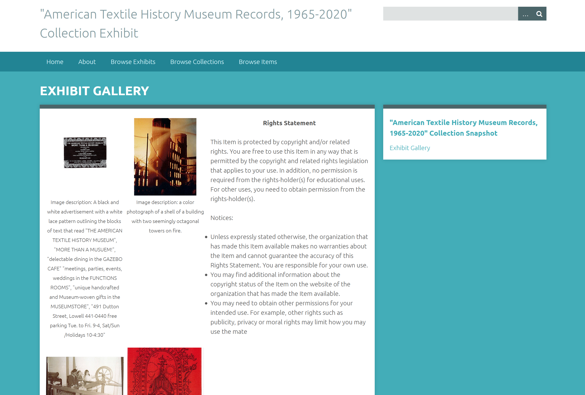

This LibGuide was created as a final project for LIS 407, "Information Sources and Services," during the Fall 2020 semester. The assignment was to create a LibGuide on a topic of the student's choosing.The topic of this LibGuide, adapting Special Collections instruction and outreach to the world of the COVID-19 pandemic, reflects Cecelia's interests in Special Collections, instruction, and outreach.
This project is licensed under a Creative Commons Attribution-NonCommercial-ShareAlike 4.0 International (CC BY-NC-SA 4.0) license. Access the LibGuide.
This handout was created as a project for LIS 488,"Technology for Information Professionals," during the Spring 2021 semester. The assignment was to choose a "buzzword," a term currently in heavy use in the LIS or tech worlds and create a one-page handout defining and explaining it to the other students in the class. Cecelia chose Creative Commons because she is interested in open access and scholarly communications, and Creative Commons is a related topic.
This project is licensed under a Creative Commons Attribution-NonCommercial-ShareAlike 4.0 International (CC BY-NC-SA 4.0) license. Access the Buzzword handout.
This tutorial was created by Bailey Bader, Cecelia Lasley, and Rebekah Taylor for LIS 488,"Technology for Information Professionals," during the Spring 2021 semester. The assignment was to develop a tutorial for the other students in the class on a technology about which the group did not know much. This group chose OER because they were all interested in exploring a different kind of educational tool. The group chose to focus their tutorial on one OER creation tool, Pressbooks, and created a sample OER that summarizes their research about OER.
This project is licensed under a Creative Commons Attribution 4.0 International (CC BY 4.0) license. Watch the Tutorial. Access the sample OER.
These projects were created as part of a larger remote practicum that accompanied LIS 438,"Introduction to Archival Theory and Practice," during the Spring 2021 semester. The finding aid describes a small collection of instiutional records that primarily focus on outreach at the American Textile History Museum in Lowell, MA. The Omeka exhibit presents a survey of the materials within the collection. The museum closed in 2016, and Simmons University now holds their inistuitonal records for use in the LIS 438 practicum program.
The materials in this project is licensed under a Creative Commons Attribution-NonCommercial 4.0 International (CC BY-NC 4.0) license. Access the Exhibit. Access the Finding Aid.
This presentation was created as part of LIS 462, "Digital Libraries," during the Fall 2021 semester. This presentation outlines the features of the Maine Memory Network, a digital library hosted by the Maine Historical Society.
This presentation was created for educational purposes, and is licensed under a Creative Commons Attribution-NonCommercial 4.0 International (CC BY-NC 4.0) license. Watch the presentation.
This presentation was created as a part of LIS 462, "Digital Libraries," during the Fall 2021 semester. This presentation outlines the baisc qualities of data governance policy in the context of small digital libraries such as the one that our class was developing over the course of the semester.
This presentation was created for educational purposes, and is licensed under a Creative Commons Attribution-NonCommercial 4.0 International (CC BY-NC 4.0) license. Watch the presentation.
This digital library was created collaboratively by the members of LIS 462, "Digital Libraries," during the Fall 2021 semester. This digital library presents digital surrogates of Dorothy Siegfreid Silhavy's scrapbook of her time at Simmons from 1938-1942. Cecelia was part of the curation and rights management teams.
This project is licensed by the Simmons University Archives for educational use only. For more information, see the Digital Scrapbook's "Terms of Use" page. Access the Dorothy Siegfreid Silhavy Digital Scrapbook.